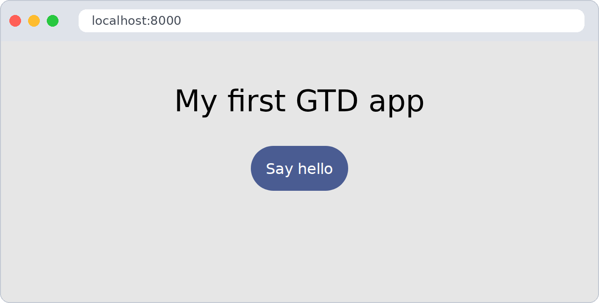
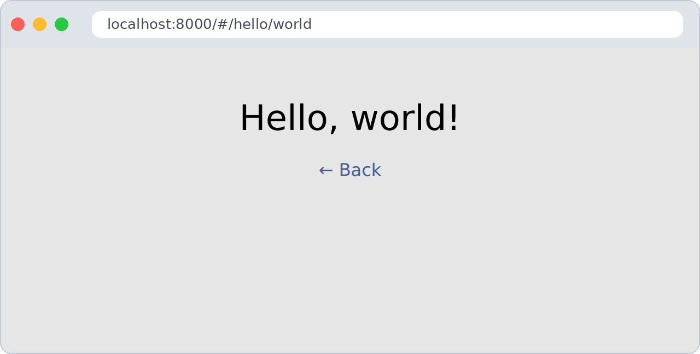
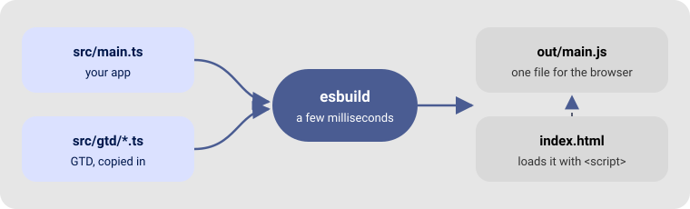

By the end of this page you will have a GTD app running in your browser, with two pages and a button. It takes about five minutes.
GTD does not use Node.js, npm or node_modules. You need only two small programs:
| Tool | What it does | Size |
|---|---|---|
| esbuild | Turns your TypeScript into one JavaScript file for the browser | one file, ~10 MB |
| Python 3 | Serves the page on localhost while you work (already installed on Linux and macOS) |
— |
Nothing gets installed globally, there is no package.json, and your project folder stays tiny.
💡 Why a local server? Browsers refuse to load scripts from a file opened by double-click (
file://…) in many cases. Any static server works; Python’s is just already there.
git clone --depth 1 https://github.com/akrck02/gtd gtd-download
mkdir -p my-app/src my-app/bin
cp -r gtd-download/src my-app/src/gtd
cp -r gtd-download/styles my-app/styles
cd my-app
GTD is not a package you install: it is a folder of source files that you copy into your project. You own them — you can read them, and even change them.
The styles/ folder holds Bubble UI, the stylesheet that goes with GTD: nice buttons, colours,
a dark theme and layout classes, in one 9 KB file. It is optional, but it makes your app look good
from the first minute.
On Linux (x86-64) the GTD repository already ships it:
cp ../gtd-download/bin/esbuild bin/
On macOS, Windows or ARM, use esbuild’s own installer, which downloads a single file:
curl -fsSL https://esbuild.github.io/dl/v0.25.8 | sh
mv esbuild bin/
Check it works:
./bin/esbuild --version # 0.25.8
Your project now looks like this:
my-app/
├── bin/
│ └── esbuild ← the builder
├── styles/
│ └── bubbleui-v3.0.0.css ← the looks
└── src/
└── gtd/ ← GTD, one file per module
├── dom.ts
├── router.ts
└── …
Create index.html in my-app/:
<!doctype html>
<html lang="en">
<head>
<meta charset="utf-8">
<meta name="viewport" content="width=device-width, initial-scale=1">
<title>My app</title>
<link rel="stylesheet" href="./styles/bubbleui-v3.0.0.css">
<style>
#app { padding: 2rem; gap: .5rem; }
</style>
</head>
<body>
<main id="app" class="box-column box-center"></main>
<script type="module" src="./out/main.js"></script>
</body>
</html>
<main id="app"> is the box where our pages will be drawn; Bubble’s box-column box-center
classes stack what we put in it and centre it. The <script> loads our code — it points to
out/main.js, the file esbuild will build, not to the .ts file.
Create src/main.ts:
import { uiComponent, setDomEvents } from "./gtd/dom.js"
import { setRoute, showRoute } from "./gtd/router.js"
import { BubbleUI } from "./gtd/bubble.js"
// 1. Find the box where pages are drawn
const app = document.getElementById("app")
// 2. Describe the home page
setRoute("/", async (_params, container) => {
const title = uiComponent({ type: "h1", text: "My first GTD app" })
const button = uiComponent({ type: "button", text: "Say hello", classes: [BubbleUI.Primary] })
setDomEvents(button, {
click: () => location.hash = "/hello/world",
})
container.append(title, button)
})
// 3. Describe a second page; "$" means "any word here"
setRoute("/hello/$", async ([name], container) => {
const greeting = uiComponent({ type: "h1", text: `Hello, ${name}!` })
const back = uiComponent({ type: "a", text: "← Back", attributes: { href: "#/" } })
container.append(greeting, back)
})
// 4. Draw the right page now, and every time the address changes
const navigate = () => showRoute(location.hash.slice(1) || "/", app)
window.addEventListener("hashchange", navigate)
navigate()
💡 The imports end in
.jseven though the files are.ts. That is the standard way to write imports in TypeScript for the browser, and esbuild understands it.
./bin/esbuild src/main.ts --bundle --format=esm --outfile=out/main.js
python3 -m http.server 8000
The first command reads main.ts, follows every import, and writes one file,
out/main.js. It takes a few milliseconds.
Open http://localhost:8000 in your browser. You should see:

Click Say hello → the address ends in #/hello/world and the page greets you:

Click ← Back → you are home again. Try typing #/hello/Ada in the address bar too.
🎉 That’s it — you have a GTD app with routing.
Nothing on screen? Head to Troubleshooting.
Leave esbuild watching in a second terminal; it rebuilds every time you save:
./bin/esbuild src/main.ts --bundle --format=esm --outfile=out/main.js --watch
Then just reload the browser after each change.
Add --minify to make the file small, and copy index.html and out/ to any static host
(GitHub Pages, Netlify, your own server…):
./bin/esbuild src/main.ts --bundle --format=esm --minify --outfile=out/main.js
esbuild builds fast because it does not check types: a typo like contaner shows up in the
browser, not in the terminal. Editors such as VS Code check types as you type. To check from the
terminal too, the GTD repository has a script that downloads the native TypeScript compiler, again
without Node:
cp ../gtd-download/bin/install-ts.sh bin/
./bin/install-ts.sh # downloads bin/tsgo once
./bin/tsgo --noEmit --target ES2022 --module ESNext --lib ES2022,DOM,DOM.Iterable src/main.ts

| You wrote | What it does |
|---|---|
uiComponent({...}) |
Creates a real HTML element — see Building the interface |
BubbleUI.Primary |
The name of Bubble’s primary class: the blue, rounded button — see HTML tags and Bubble UI |
setDomEvents(button, { click }) |
Adds a click listener — same as addEventListener |
setRoute("/hello/$", view) |
Says which function draws which address — see Views and routing |
showRoute(path, app) |
Clears app and draws the matching page |